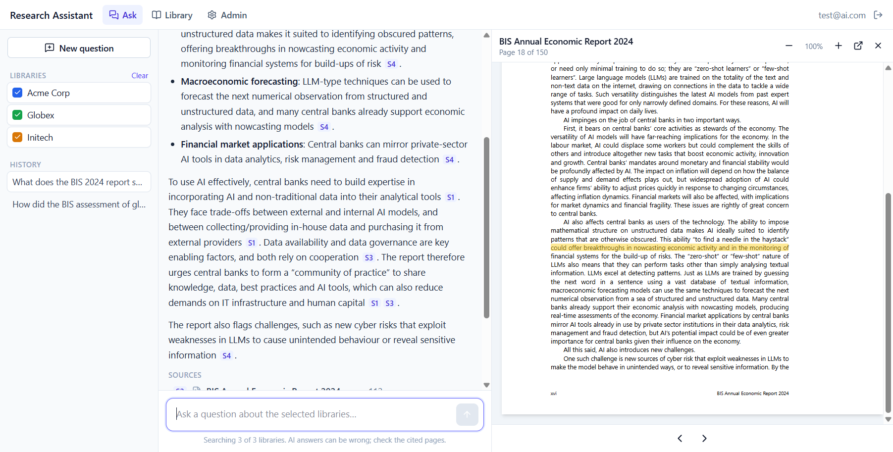
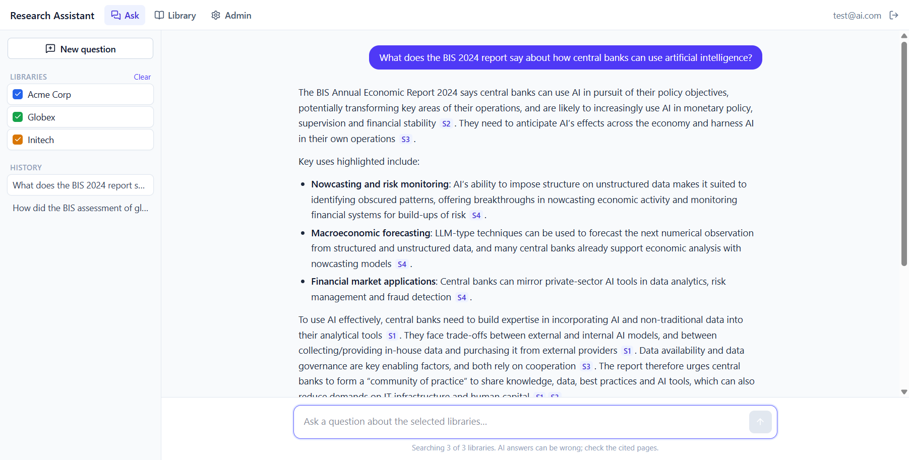
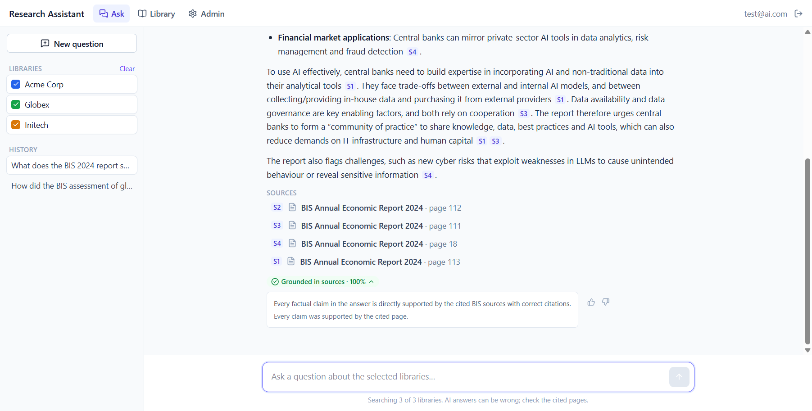
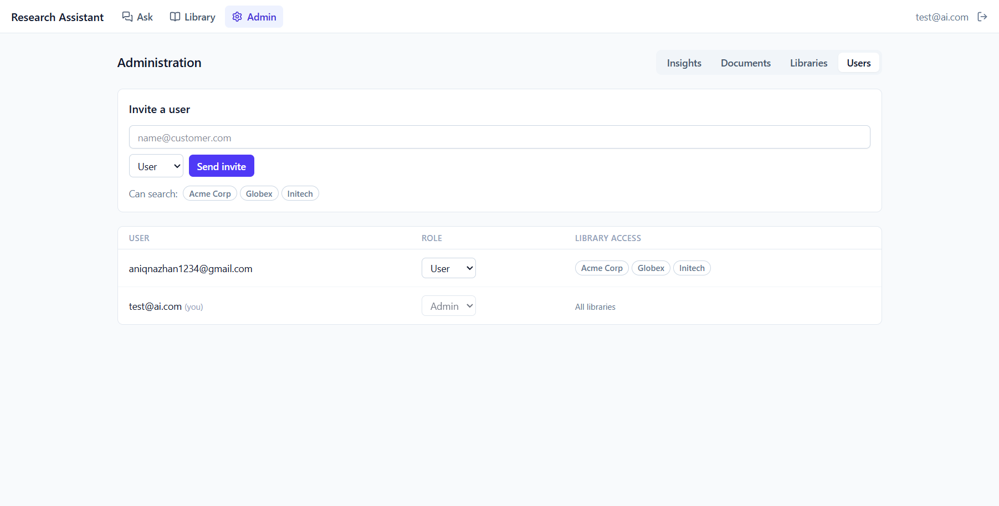
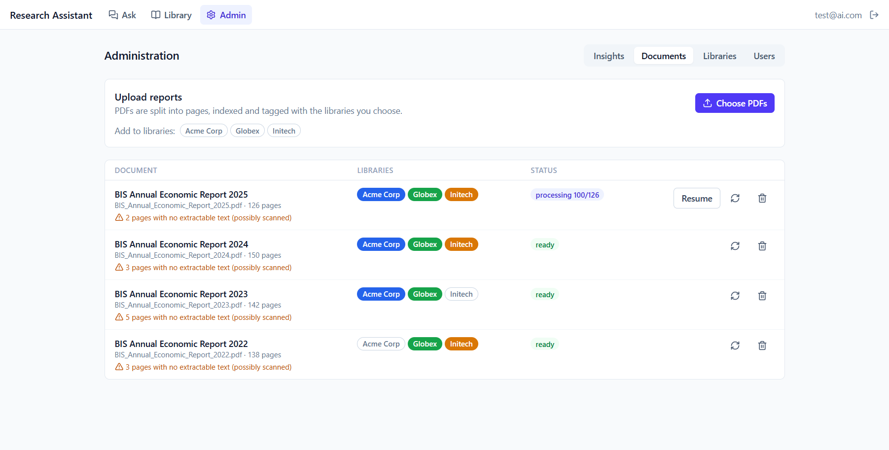
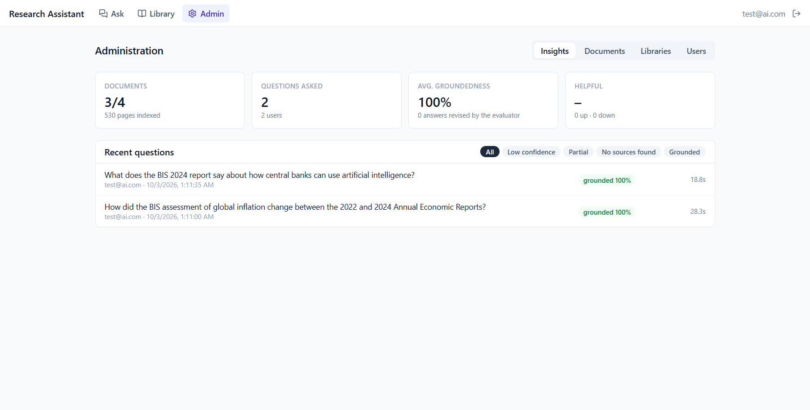

Ask questions across a company's research library and get answers grounded in the reports, with citations to the exact page.
✓ Working prototype built and running
The company's historical research holds a lot of value, but it is locked inside individual PDF reports. Customers have to open reports one by one to find information and connect it across years. This proposal puts forward an AI research assistant. An authorised user picks the research libraries they want, asks a question in plain language, and gets an answer built only from those reports. Every statement cites the report and page it came from.
The concept is already built as a working prototype, not just a design. Today it:
The company has a substantial body of historical research, but it is published as PDF reports. That causes three problems:
A working prototype where an authorised user can ask questions across a selected company's research library and get useful, source-grounded answers they can verify. That lets the business demonstrate and assess the concept before deciding on a production build.
| Principle | What it means in the design |
|---|---|
| Grounded, not generative | The model may only use text retrieved from the selected reports. If the reports don't cover a question, the assistant says so rather than guessing. |
| Verifiable in one click | Every factual sentence carries a citation. Clicking it opens the PDF at the exact physical page, with the supporting sentence highlighted. |
| Secure by default | Access is checked in the database (row-level security), not only in the user interface. A user cannot retrieve text from a library they haven't been granted. |
| Small to start, easy to grow | Managed services (Supabase, Vercel, DeepSeek) mean no servers to run. Each component can later be swapped for an enterprise equivalent. |
There are two roles. Administrators build the libraries; users ask questions and verify answers.
S1.
Each requirement in the brief maps to a feature that runs in the prototype today.
| Requirement | How it is addressed | Status |
|---|---|---|
| Ask questions across multiple reports | Library selector plus a chat interface. The Query Agent splits comparative or multi-period questions into up to three sub-queries, and retrieval caps pages per report so an answer draws on several reports. Follow-up questions keep the conversation's context. | Built |
| Ingest, index and retrieve efficiently | Direct-to-storage upload. Batched page-by-page extraction with pypdf. Header and footer cleanup. Overlapping chunks with embeddings. Hybrid vector and keyword search in Postgres, fused with Reciprocal Rank Fusion. | Built |
| AI answers grounded in the sources | The Answer Agent receives only the retrieved pages and must cite every factual sentence. The Evaluator Agent checks each claim; unsupported answers are rewritten once, then flagged if they still fail. | Built |
| Citations, document names and page references | Clickable [S#] chips show the report title and page. A source list sits under each answer. The PDF viewer opens at the cited physical page with the evidence highlighted, and shows the printed page number when it differs. | Built |
| Restrict access to authorised users and selected libraries | Invite-only Supabase Auth with two roles. Per-user library grants. Row-level security on every table and in the search function. Private PDF storage served through short-lived signed URLs. | Built |
| Workflow, architecture and stack | React front end; FastAPI back end; Supabase for Postgres with pgvector, Auth, Storage and Edge Functions; DeepSeek models; deployable to Vercel. See section 5. | Built |
| Evaluate quality, relevance and source accuracy | Live: an evaluator verdict and grounded score on every answer, plus thumbs-up/down feedback, shown on the Insights dashboard. Offline: a golden-set runner measuring Recall@10, MRR, citation accuracy, faithfulness, correctness and refusal accuracy. | Built Golden set next |
| Demonstrate customer value before an enterprise build | A 10-week client engagement with weekly meetings, measurable success criteria and a go/no-go decision. See section 13. | Proposed |
The system has three tiers: a single-page web app, a stateless Python API, and Supabase as the managed data platform. The language models are called over an API, so no model infrastructure has to be hosted.
| Layer | Choice | Why |
|---|---|---|
| Front end | React 19, Vite, Tailwind CSS, TanStack Query, react-pdf | Fast to build and responsive. react-pdf exposes the text layer, which is used to highlight evidence. |
| API | FastAPI (Python), served on Vercel | Python has the best PDF and AI libraries, and FastAPI streams answers as server-sent events. |
| Language models | DeepSeek deepseek-v4-pro (answers), deepseek-flash (planning, evaluation) | OpenAI-compatible and low cost. The fast model keeps the per-answer check cheap. The model and reasoning effort are configurable per agent. |
| Embeddings | Supabase built-in gte-small via an Edge Function | No extra vendor or key. Can be swapped for a larger model in one file. |
| Database and search | Supabase Postgres, pgvector (HNSW), full-text search | Vectors, keywords, metadata and security rules in one database, so hybrid search runs in a single SQL function. |
| Auth and files | Supabase Auth and Storage | Invite-only accounts, JWTs and a private bucket, all managed. |
| Quality | pytest, Vitest, SQL security tests, golden-set evaluation, GitHub Actions CI | Every change is checked automatically; answer quality is measured, not assumed. |
Published reports often number pages with roman numerals in the front matter, or restart numbering in each section. The prototype therefore does not rely on the printed page number. It records every page by its physical position in the file (page_index), and every citation uses that number. The printed label is kept only for display. Of the 10 test reports collected (5 Federal Reserve, 5 BIS), 6 have printed page numbers that differ from their physical positions; the viewer shows both, e.g. "page 51 (printed 31)".
match_chunks, runs two searches inside the database: semantic similarity (pgvector, HNSW index) and keyword search (Postgres full-text). It merges their rankings with Reciprocal Rank Fusion. Semantic search finds paraphrases; keyword search catches names, tickers and exact phrases.Three specialised agents handle each question. Splitting the work keeps each prompt simple and makes the answer checkable.
| Agent | Model | Responsibility |
|---|---|---|
| Query Agent | deepseek-flash (no reasoning, for speed) | Turns the question and chat history into a standalone question, 1–3 focused sub-queries for comparative or multi-period questions, and keywords for the keyword search. |
| Answer Agent | deepseek-v4-pro (low reasoning effort) | Answers only from the retrieved pages and cites every factual sentence. Points out changes between reports and periods. If the sources don't cover the question, it says so instead of guessing. |
| Evaluator Agent | deepseek-flash (low reasoning effort) | For every claim, records supported, partial or unsupported, whether the citation is correct, and a verbatim evidence quote. Produces a grounded score from 0 to 1. Citations to sources that don't exist are always marked wrong. |
Quality gate. If any claim is unsupported, or the grounded score is below 0.75, the answer is rewritten once using the evaluator's findings and checked again. If it still fails, it is shown with a "Low confidence: verify before use" badge rather than hidden.

Trust depends on users being able to check an answer quickly. The prototype makes verification a single click.
[S#] marker in an answer is a clickable chip. Hovering shows the report title and page.Restricting each user to the research libraries they are entitled to is enforced at several layers, so a bug in one layer doesn't expose data.
| Layer | Control |
|---|---|
| Identity | Supabase Auth with email and password or a one-time link. Accounts are invitation-only; there is no public sign-up. |
| Roles and grants | Users are admin or user. Admins grant each user specific libraries, and the label on a report decides which libraries it belongs to. |
| Database (main control) | Postgres row-level security on documents, pages, chunks, libraries, conversations and messages. A user sees a document only if it carries a library they hold. The search function runs with the caller's permissions, so naming another library's id still returns nothing. |
| API | Verifies the user's token, intersects the requested libraries with the user's grants before any search, and queries the database with the user's own token. |
| Files | PDFs sit in a private bucket. A short-lived signed URL is issued only after the database confirms the user can see the document. |
| Privacy | Conversations are private to their owner. Administrators can read answers in Insights, so they can review quality. |

Administrators run the libraries without technical help.


Quality is measured in two complementary ways: continuously on every live answer, and offline against an expert-written test set before any change ships.
A domain expert writes 30–50 questions across four types: single fact, cross-report synthesis, comparison over time, and unanswerable (the assistant must decline). Each question records the expected report pages and a reference answer. The included runner (evals/run_eval.py) sends them through the same pipeline the app uses and reports:
| Metric | What it measures | Target |
|---|---|---|
| Recall@10, MRR | Relevance of retrieval: were the expected pages found, and how high did the first one rank? | ≥ 0.85 |
| Citation accuracy | Source accuracy: does each cited page actually contain the claim? Scored by an LLM judge, with about 20 verdicts checked by hand. | ≥ 0.90 |
| Faithfulness | Share of claims supported by the cited sources. | track |
| Correctness, relevance | Answer quality against the expert's reference answer, on a 1–5 scale. | track |
| Refusal accuracy | Unanswerable questions are declined, not answered. | ≥ 0.90 |
| Latency, tokens | Time to answer (p50/p95) and cost per question. | track |
Reports are saved as CSV and markdown, so runs before and after a change to prompts, chunking or retrieval can be compared side by side.
| Capability | Status |
|---|---|
| Invite-only sign-in, admin and user roles, per-user library grants | Working |
| PDF upload, batched indexing with progress, resume and re-index | Working |
| Hybrid semantic and keyword search, restricted by database security | Working |
| Three-agent answering with streaming, citations and an evaluator quality gate | Working |
| PDF viewer that opens at the cited page and highlights the evidence | Working |
| Admin panel: documents, libraries, users, insights | Working |
| Automated tests: 38 API, 7 front end, 24 database security; CI pipeline | Passing |
| Golden-set evaluation runner | Built |
| Golden set written with a domain expert and baseline scores | Next step |
These are early, qualitative observations from a small number of questions. They are not yet a measured benchmark; the golden-set runs during the client engagement will provide one.
The prototype is ready to put in front of the client. Over 10 weeks we hold a weekly meeting with the client: we show progress in the live prototype, review results together, and agree the priorities for the next week. Every week is shaped by the client's feedback, and the engagement answers the question that matters before a larger investment: do customers get faster, trustworthy answers from the research they already pay for?
| Week | Weekly client meeting | Work between meetings |
|---|---|---|
| 1 | Kick-off: agree goals, success criteria, the research libraries in scope and the users taking part. | Receive the client's reports and set up the client's environment. |
| 2 | Walk through the prototype on the client's own reports. Review the first answers together. | Load 1–2 libraries. Fix the reference-page retrieval issue. |
| 3 | Agree the golden set of test questions with the client's domain expert. | Write the golden set and record baseline quality scores. |
| 4 | Review baseline scores. Agree the access rules: which users see which libraries. | Tune retrieval and prompts. Configure user accounts and library access. |
| 5 | Onboard 5–10 client users with a short walkthrough. | Run a timed task study: real questions answered manually versus with the assistant. |
| 6 | Review the timed-task results and early user feedback. | Act on feedback. Re-run the golden set after each change. |
| 7 | Review Insights: low-confidence answers, questions with no sources, ratings. | Close gaps in the library and in retrieval. Add reports the client requests. |
| 8 | Demo the improvements. Agree any final adjustments. | Final tuning. Golden-set run against the targets. |
| 9 | Short interviews with the client's users. Review results against the success criteria. | Compile results, costs and the production options. |
| 10 | Final review: results, recommendation and the go/no-go decision on a production build. | Hand over the final report and the prototype. |
| Measure | Target |
|---|---|
| Time to answer a research question versus manual PDF search | ≥ 50% faster |
| Citation accuracy (golden set) | ≥ 90% |
| Retrieval Recall@10 (golden set) | ≥ 85% |
| Unanswerable questions correctly declined | ≥ 90% |
| Answers rated helpful by client users | ≥ 70% |
| Client users who would use it weekly | ≥ 60% |
| Limit | Impact and mitigation |
|---|---|
| Reference and endnote pages can crowd out body text | Seen in testing. Exclude or down-weight them at ingestion (engagement week 2). |
| Embedding model is small and English-only (gte-small) | Hybrid keyword search compensates. Swapping to a larger or multilingual model changes one file. |
| Scanned PDFs, tables and charts | Pages without a text layer are flagged but not indexed. Tables are read as plain text. Add OCR and layout-aware extraction in production. |
| Response time of 19–28 s | The answer streams as it is written, so text appears sooner. The evaluator check and model reasoning add time; reasoning effort is configurable per agent. |
| Evaluator judges itself generously at times | An honest "not covered" reply was rated 100% grounded. Spot-check judge verdicts by hand and consider a judge from a different model family for offline evaluation. |
| Data sent to a third-party model API | Only retrieved excerpts are sent, never whole libraries. Confirm the provider's data terms, or use an approved provider or region, before using sensitive research. |